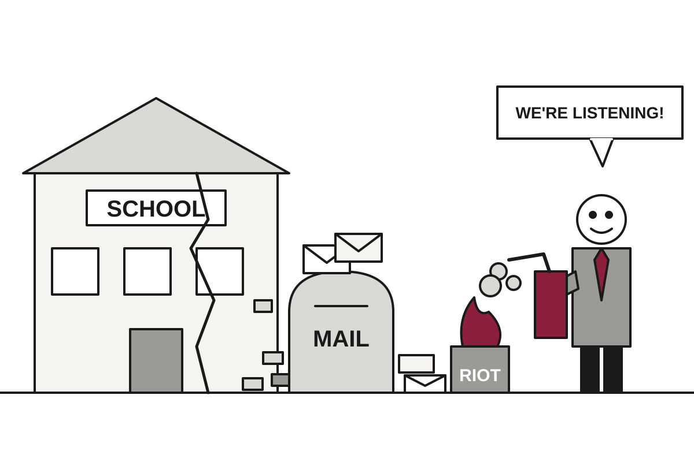

France Discovers Student Complaints About Crumbling Schools Can Be Ignored Only Until They Aren't
Arrests reached 1,200 by one official count and at least 1,800 by NPR's, as protests that began over school conditions widened into a national fight over prices, inequality and who is listening.
The wire said: France's Macron vows to hold accountable those who 'sought to bring down the Republic' · NPR World

Catch up
Student protests began last month over teacher absences and run-down school buildings, then drew in unions and remnants of the Yellow Vests movement. On Saturday, hundreds of thousands marched nationwide, and some demonstrations turned violent.Why it matters
A government that is already juggling high prices and public distrust now has to separate a peaceful majority from a violent minority without making the majority angrier. How it does that will shape whether the movement fades or grows.Police in France arrested at least 1,800 people after nationwide demonstrations that drew hundreds of thousands, NPR reported, as violent groups clashed with officers and looted shops. The protests began as a complaint about schools. They now cover prices, inequality and the general sense that the government has stopped answering its mail.
The numbers differ by source, which is normal for a protest and for arithmetic done under pressure. DW reported that Prime Minister Sebastien Lecornu put arrests at about 1,200 and police injuries at 150. NPR's later figure is at least 1,800. Lecornu said it was a miracle the toll was not higher, which is a sentence officials use when the toll is already high enough to need a miracle.
The Interior Ministry said 550,000 people turned out nationwide, including 110,000 in Paris alone, across 110 marches. Translation: the ministry counted a very large crowd, and the number of people who did anything illegal was a small fraction of it. The ministry's own account of the violence listed attempted looting, fires set to street furniture, and attacks on seats of power and media outlets.
The damage was specific. AFP reported dozens of shops looted in Paris, Marseille, Nice, Bordeaux and Lille, and broken windows at the offices of broadcasters CNews and Europe 1. In Lyon the tourism office was set alight. In Limoges the town hall burned, and DW reported the historic building was largely destroyed while crowds watched. In Lille, protesters smashed into city hall, vandalized it and left.
President Emmanuel Macron said on X that those who attacked prefectures and businesses and looted town halls would be prosecuted and punished. NPR's headline had him vowing to hold accountable those who sought to bring down the Republic. That is a large claim about a movement that started with teacher absences, but it is the kind of claim governments make when a town hall is on fire.
The ministry blamed the unrest on the hard-left, and the government has accused Jean-Luc Melenchon's France Unbowed party of pouring fuel on public discontent. The party denies it. Melenchon did back the student protests and marched in one on Tuesday, which is the sort of overlap that lets both sides tell the story they prefer.
DW correspondent Jack Parrock offered a less convenient picture. He said the violence was confined to small pockets, and that most people he met were teachers, nurses, students and workers who wanted no part of it, though they understood why it was happening. He described a collective rage against a government they feel is not listening. He also said police seemed to be trying to show restraint.
That is the government's real problem. A riot is easy to condemn, and condemning one is cheap. A peaceful crowd of teachers and nurses with a list of grievances about prices and schools is harder, because it cannot be arrested. Paris had banned marches near the Elysee, the prime minister's office and the Champs-Elysees, and the crowds went elsewhere.
What to watch next: whether prosecutions keep the headlines on the arson, or whether the schools, where all this started, finally get some attention.
Satire based on reporting by NPR World, DW. Read the originals for the straight version.